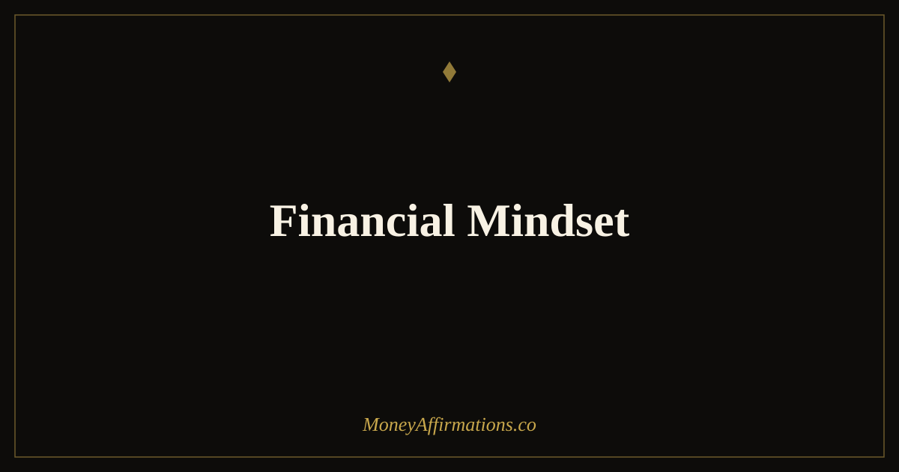

Financial Mindset: 30 Affirmations to Rewire How You Think About Money

Your financial outcomes are largely determined before you ever open a bank app, review a budget, or negotiate a salary. They are determined by your financial mindset — the collection of beliefs, assumptions, and automatic thoughts about money that operate beneath conscious decision-making. These beliefs were mostly formed in childhood and early adulthood, often without any deliberate choice on your part. They tell you whether money is scarce or abundant, whether you deserve to be wealthy, whether financial success requires sacrifice or can come with ease, and whether your financial future is expanding or contracting.
These 30 financial mindset affirmations are designed to systematically replace the most common limiting money beliefs with expansive, growth-oriented ones. Used as a daily practice, they do not just make you feel better about money — they change the automatic financial decisions that accumulate, over time, into dramatically different financial outcomes.
What is a financial mindset?
A financial mindset is the complete set of beliefs and automatic thought patterns you carry about money. It determines whether you see financial opportunities or financial threats, whether you feel deserving of wealth or secretly convinced it is not for you, and whether your default financial behaviours — saving, spending, investing, negotiating — are driven by confidence or by fear. Most people carry a financial mindset they never consciously chose, assembled from family attitudes, cultural messages, and early money experiences.
The good news is that a financial mindset can be deliberately rebuilt. Affirmations are the most direct tool for this — consistently introducing the specific beliefs that characterise wealthy thinking until they become your automatic response. The money affirmations collection provides the broader toolkit that these financial mindset statements build upon.
30 financial mindset affirmations
- I have a wealthy financial mindset and it shapes every decision I make about money.
- I believe deeply in my ability to earn, grow, and keep significant wealth.
- My financial mindset is one of abundance — I see opportunity where others see scarcity.
- I think like a wealthy person: long-term, strategically, and from a foundation of self-belief.
- Money is abundant in this world and I am fully capable of attracting my share of it.
- I have replaced every scarcity belief with an expansive belief about what is financially possible for me.
- I think about money with clarity, confidence, and genuine excitement about where I am heading.
- My financial decisions reflect a mindset of growth, patience, and intelligent long-term thinking.
- I deserve to be financially comfortable, financially secure, and financially free.
- My financial mindset expands every time I learn something new about money and investing.
- I approach every financial challenge as information, not evidence of failure.
- Wealthy thinking comes naturally to me — I have cultivated it deliberately and it guides me daily.
- I think in terms of assets, not just income — and I build both with consistent intention.
- My relationship with money is one of partnership — I respect it and it multiplies for me.
- I release every inherited belief about money that does not serve my financial future.
- I approach money with a growth mindset: every financial skill I build is worth developing.
- I am capable of creating, managing, and growing wealth — this belief is the foundation of my financial life.
- My financial mindset is stronger than any temporary setback or external economic condition.
- I invest in my financial education because a wealthy mindset is worth more than any single investment.
- I think about my future finances with optimism, strategy, and the confidence of someone already on the right path.
- I am patient with my financial journey because I know that wealthy thinking compounds over time.
- I notice and interrupt every scarcity thought and replace it with an abundance belief immediately.
- My financial mindset attracts the right advisors, opportunities, and information into my life.
- I make financial decisions from a place of knowledge and confidence, not fear or impulse.
- I think big about money — the kind of big that motivates consistent, disciplined daily action.
- My mindset about earning has no ceiling — I believe I am capable of significantly more than I currently earn.
- I hold a wealthy self-concept regardless of my current bank balance — the mindset precedes the money.
- Financial freedom is not a vague hope for me — it is a specific goal I am building toward daily.
- My financial mindset is one of my greatest personal assets and I tend to it as carefully as any investment.
- I think, speak, and act like the financially successful person I am in the process of fully becoming.
How to use these affirmations
Financial mindset affirmations work best when they are paired with deliberate financial education. Each week, alongside your daily practice, read one article, one chapter, or one resource about money — investing, savings strategies, tax efficiency, income growth, whatever is most relevant to your current goals. The affirmation plants the identity of someone with a wealthy financial mindset; the knowledge gives that identity real content and credibility.
Choose three affirmations from this list each morning and speak them aloud before engaging with financial tasks. If you review your budget, check investments, or handle any money-related work that day, repeat your chosen affirmations immediately before. Over time, the association between intentional financial activity and a confident, growth-oriented mindset becomes automatic — which is precisely what a wealthy financial mindset means in practice.
How financial mindset determines financial outcomes
The most extensive study of financial psychology and wealth outcomes consistently finds that mindset variables — beliefs about deservingness, about financial capability, about whether money is scarce or abundant — are stronger predictors of long-term financial outcomes than income alone. High earners with scarcity mindsets consistently fail to build wealth. Moderate earners with wealthy mindsets consistently do.
The mechanism is behavioural. A scarcity mindset produces decisions that feel rational but are financially self-defeating: spending to relieve anxiety, avoiding investments out of fear, undercharging for work, failing to ask for raises, and never quite believing that the next level is truly accessible. A wealthy financial mindset produces the opposite set of decisions — patient, strategic, confident, and oriented toward growth over the long term. These decisions, made daily across months and years, produce the compound financial outcomes that make the difference between financial struggle and genuine financial freedom.
Tips to make them work faster
- Audit your current financial beliefs first. Write down five beliefs you hold about money. Then examine each one: is it expansive or limiting? Is it chosen or inherited? This audit makes the affirmations targeted rather than generic.
- Read one money book alongside the practice. Affirmations build the belief; knowledge builds the competence. The combination is significantly more powerful than either alone.
- Notice your self-talk around financial decisions. Every time you catch a scarcity thought — "I can't afford that," "money doesn't grow on trees," "that's for other people" — consciously replace it with the relevant affirmation from this list.
- Speak about money positively in conversation. The financial mindset is shaped by what you say aloud, not just what you think. Change your money language publicly and privately.
- Track your financial mindset score monthly. Rate your financial beliefs from 1–10 each month. Watching the number rise is one of the most motivating aspects of this practice.
Frequently Asked Questions
What is a financial mindset and why does it matter?
A financial mindset is the complete set of beliefs, assumptions, and automatic thoughts you carry about money — how it works, whether you deserve it, how easy or hard it is to earn and keep, and what your financial future looks like. It matters because it operates beneath conscious decision-making, shaping every financial choice you make without you being aware of it. Two people with identical incomes and access to the same financial education will produce dramatically different financial outcomes if they carry different financial mindsets. The mindset determines the behaviour; the behaviour determines the result.
Can you change your financial mindset with affirmations?
Yes — and affirmations are one of the most direct and evidence-backed tools available for doing so. The financial mindset is not fixed. It is a set of neural patterns formed through repetition and experience, which means it can be reformed through deliberate repetition of new patterns. Financial mindset affirmations work by consistently introducing new beliefs into your automatic thought landscape, gradually replacing limiting money patterns with expansive ones. The change is not instantaneous but it is real, measurable, and reflected in changed financial behaviour within weeks of consistent practice.
What is the difference between a scarcity mindset and a wealthy financial mindset?
A scarcity mindset operates from the assumption that money is limited, hard to get, and likely to run out — producing hoarding, under-earning, risk avoidance, and anxiety around financial decisions. A wealthy financial mindset operates from the assumption that money is abundant, that your capacity to earn and grow it is expandable, and that financial opportunities are available to those who prepare for and pursue them. The practical difference is enormous: the same market conditions, the same job, the same economic environment will produce different outcomes depending on which mindset is driving the decisions.
Your financial mindset is the foundation everything else is built on. Build it deliberately and consistently with the complete money affirmations collection — the toolkit that supports every dimension of your financial transformation.